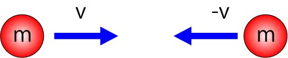
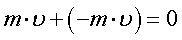
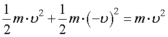
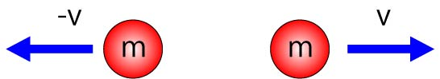
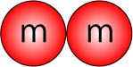
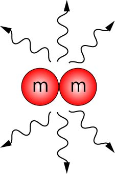

これもなかなか難しい質問です．
ネットを見ると，
両者とも運動の勢いを表す量
ではありますが，
運動量：運動しているもの，方向性を持ったもの
であるのに対し，
エネルギー：どこかに蓄えられているもの
と言う違いで説明していますね．
具体的な違いを一つあげてみましょう．
ある系に，質量，ｍ，を持ち，速度が，ｖ，－ｖを持った物体があるとします．
この二つの物体が正面から衝突する，と言う場合を考えましょう．

系全体の運動量は，

となり，０，です．
系全体のエネルギーは，

となり，有限の値となります．
さて，衝突前後の，運動量，エネルギーは保存します．
衝突した際には，そのまま反発する，静止するという二つの場合を想定することができます．
もちろんその中間も存在しますが．
まずは完全に反発する場合，ｌ

この場合の，運動量，エネルギー，は上記の式通りですね．
保存しています．
では，衝突して二つとも静止した場合を考えましょう．

この場合の，運動量，エネルギーはそれぞれ，０，となります．
運動量は，衝突前後とも０ですが，エネルギーはどこに行ってしまったのでしょう？
その一つの可能性として，熱に変換されてしまった，と言うことがあります．

運動のエネルギーが熱エネルギーに変換されてしまったのです．
つまり，エネルギーはなくならずに保存していることになるのです．
衝突前：運動エネルギー
衝突後：熱エネルギー
では，最初から静止している二つの物体を考えましょう．
このときの，エネルギー，運動量ともに，０，です．
この状態から，突然，二つが，ｖ，の速度で離れてしまったとしましょう．
この際の，運動量は０のままで保存しています．
しかし，エネルギーは０から有限の値，ｍｖ２，となっています．
これは，保存則を考えても，明らかにおかしいですね．
つまり，このようなことは起きえないのです．
こういった違いが，運動量，エネルギーにはあるのです．
さて，生物物理の世界（我々の分野？）では，ほとんど運動量は使いませんので，ここでは，エネルギーに関していろいろと説明していきましょう．